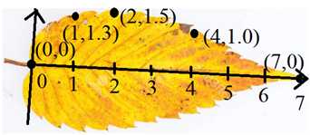

🐧차펭귄 학교수학
Home
Login
정적분을 이용하여 나뭇잎 넓이 구하기
시간이 조금 걸립니다. '전송' 버튼이 활성화될 때까지 기다려주세요.
(출처 바로가기) 차민경 페이지
1. 꼭짓점 입력
아래와 같이, 나뭇잎의 줄기를 x축으로 하여 나뭇잎 윤곽을 지나는 6개 점의 좌표(정수)를 아래에 입력하세요.

전송
2. 꼭짓점 좌표
3. 근사함수(3차 다항함수)
산출
4. 정적분으로 넓이 어림값 구하기
산출
정적분 값 :